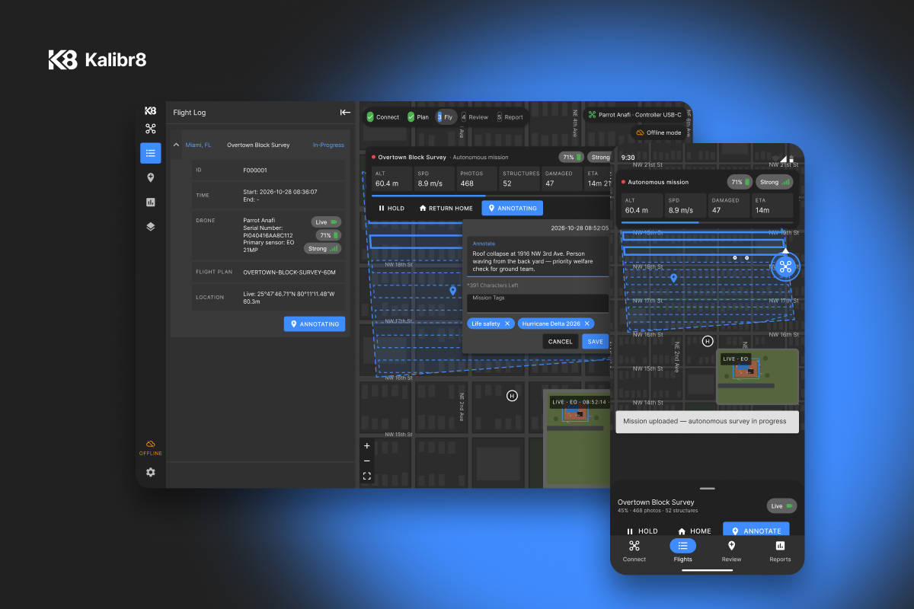
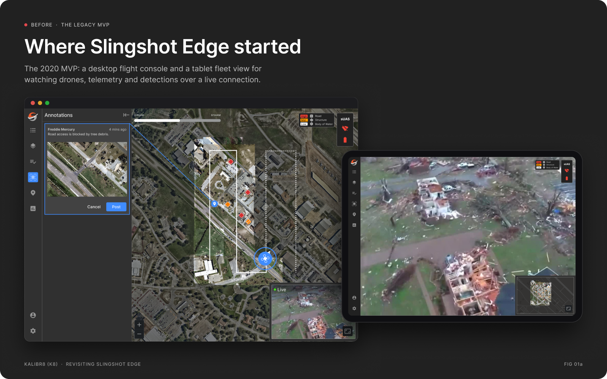
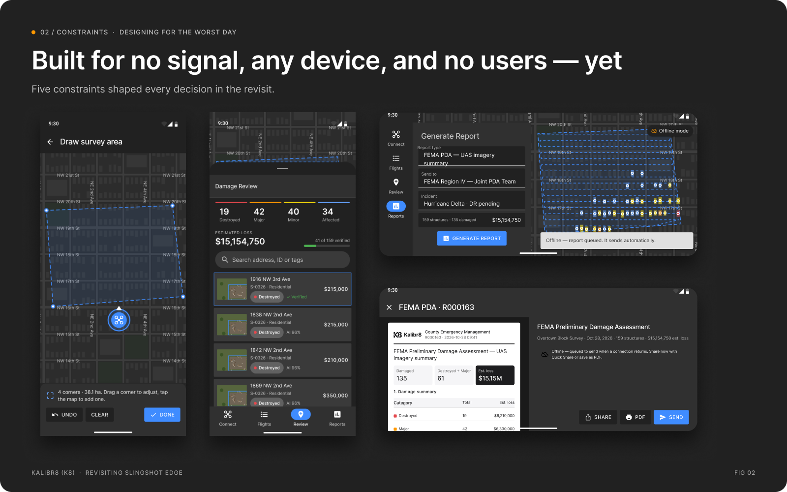
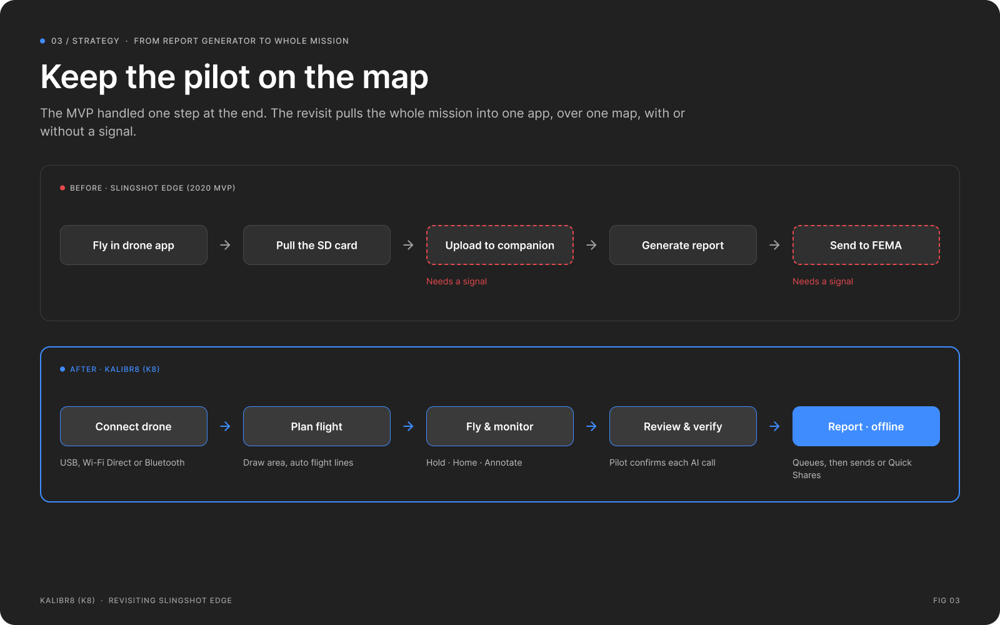
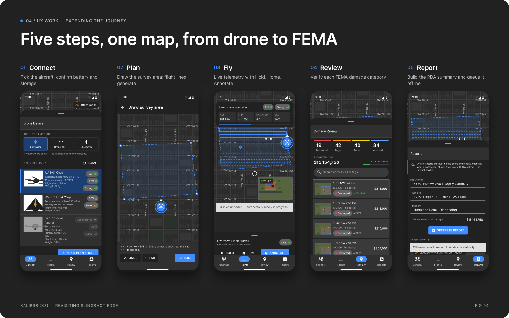
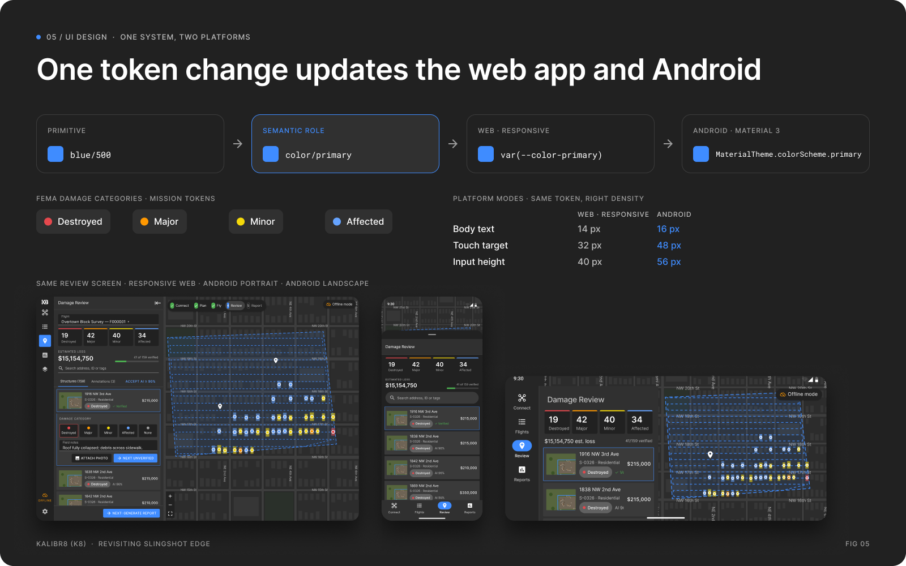
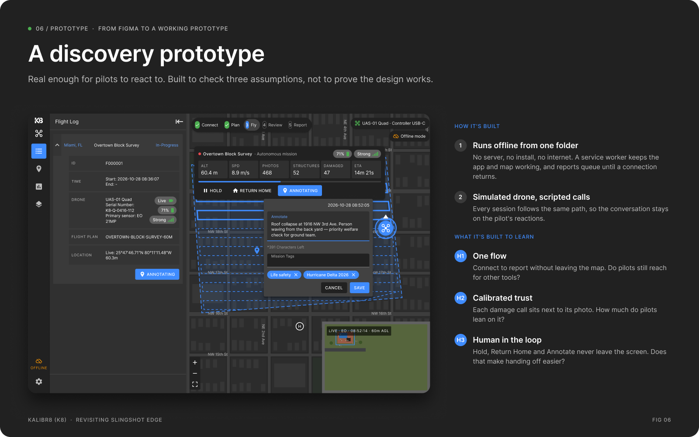
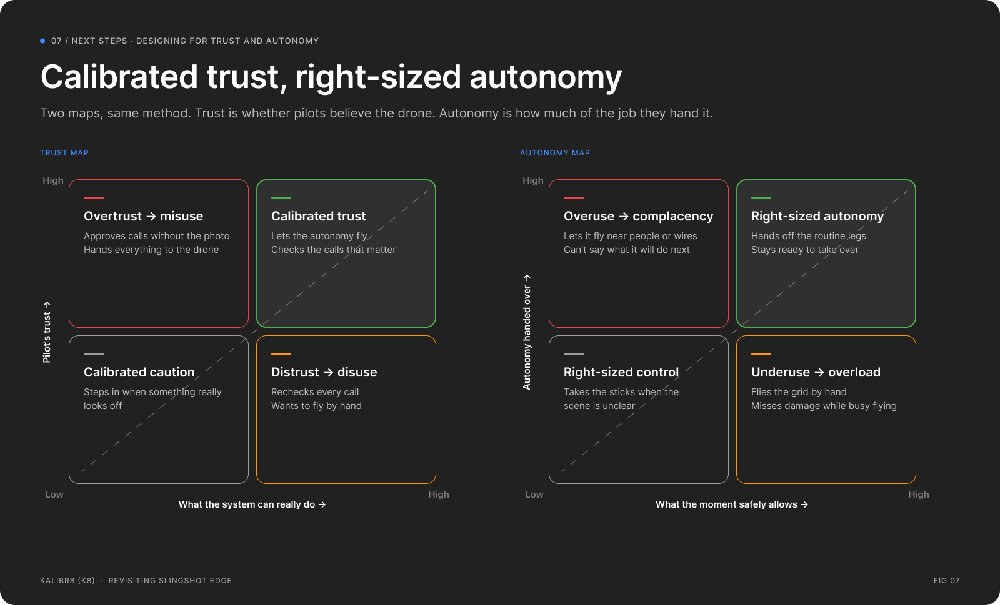

Disaster-Relief UAV Survey Prototype Case Study
From Companion App to Field Tool

In 2020 I helped design Slingshot Edge, an MVP companion app that turned UAV pilots’ hurricane surveys into damage reports for FEMA. Years later, a recruiter at a drone company asked me three questions:
- Do you design for mobile? Their pilots use Android phones because connections in the field are poor.
- How do you design for trust?
- How do you design for autonomy?
Those questions sent me back to the MVP to ask what it took for granted: a working connection, one kind of device, and a pilot who only touched the data after the flight. This case study is my answer: Kalibr8 (K8), an offline-first, Android-ready discovery prototype that covers a pilot’s whole mission, and a plan to put it in front of pilots to check my assumptions about trust and autonomy.
What the MVP Assumed
Slingshot Edge, the 2020 MVP, did one job well. It took a pilot’s survey results and produced a damage report in the format FEMA expects. Looking back, it was built on three assumptions that a real disaster can break.
There’s a signal.
The MVP generated and sent reports over a connection. After a hurricane, cell towers and Wi-Fi are often the first things to go.
The report starts after the flight.
As a companion app, it picked up where the drone’s own software left off. Planning, flying and reviewing still happened somewhere else, and every hand-off was a chance to lose a photo or mislabel a house.
Everyone has the same device.
Pilots fly with whatever their agency or company issues. Often that’s an Android phone or controller, so the design has to hold up on a phone, not just a larger screen.
FIG 01 — Before: the legacy MVP

Designing for the Worst Day
No connectivity.
Everything has to work with no Wi-Fi or cell signal: maps, flight planning, damage review and report generation. Reports queue on the device and send when a connection returns.
Android is a first-class platform.
The revisit designs for an Android phone, in portrait and landscape, alongside the responsive web app. It uses Material 3 rather than a squeezed-down web layout.
Field conditions.
I expect sun glare, heat and gloves to matter. That’s why the design uses a dark, high-contrast theme, large touch targets and short, linear steps. Pilots need to confirm it.
No users yet.
The five 2020 interviews are my only research. Every new decision in this revisit is a hypothesis until pilots use it.
A new name and mark.
The revisit ships as Kalibr8 (K8), with its own monogram, so it stands apart from the Slingshot Edge brand.
FIG 02 — Designing for the worst day

From Report Generator to Whole Mission
The revisit rests on one rule: keep the pilot on the map. Every step of the mission happens over the same map, so the pilot always knows where the drone is and which houses have been surveyed.
| Slingshot Edge (2020 MVP) | Kalibr8 (K8) |
|---|---|
| Companion app that generates FEMA reports | One app: connect, plan, fly, review, report |
| Needs a connection to generate and send | Builds reports offline and queues them to send |
| No native Android experience | Responsive web app (laptop, tablet or phone) plus native Android phone layouts, portrait and landscape, from one token system |
| Report starts from finished survey data | Damage is pinned to each building on the map as the survey runs |
These are the assumptions the prototype is built to explore. None of them are proven yet. They’re what I want pilots to confirm, push back on or reshape.
FIG 03 — From report generator to whole mission

Extending the Journey
I kept the MVP’s report flow as the end point and extended the journey backward to cover the whole mission. That gave five steps, and each one became a short run of screens.
Connect the drone.
Pick the aircraft over USB, Wi-Fi Direct or Bluetooth, then confirm battery, signal and storage before anything else.
Plan an autonomous flight.
Draw the survey area on the map and set altitude and overlap. The app generates the flight lines, then walks the pilot through a pre-flight checklist.
Fly and monitor.
A live view shows altitude, speed, ETA and damaged structures found so far. Hold, Return Home and Annotate stay on screen.
Review damage.
The app tags each building Affected, Minor, Major or Destroyed, with an estimated loss. The pilot verifies or corrects each call against the photo.
Generate and send the report.
The step the MVP was built for, now offline. The app builds a FEMA PDA summary, then queues it or offers Quick Share or PDF.
FIG 04 — Extending the journey

One System, Two Platforms
I built one token-based design system for Kalibr8 in Figma and applied it to both a responsive web app and Google’s Material 3 kit for Android. A single color or type change updates every screen on both platforms.
Layered tokens.
Primitive values sit underneath semantic roles named after Material 3 (primary, surface-container, on-surface). Each role carries its code name for both platforms: a CSS variable for the web and a MaterialTheme.colorScheme role for Android.
Platform modes, not two systems.
A Platform collection has a web mode and an Android mode. It switches type sizes and control heights, so the same text style renders at the right density on each device.
Re-themed Material 3, not a lookalike.
The Android screens use real Material 3 components (navigation bar and rail, bottom and side sheets, text fields, snackbars) remapped to my tokens. Brand details carry over: tighter corners, uppercase button labels and a filled selected-nav state.
Mission-specific tokens.
FEMA’s four damage categories each have a dedicated color, plus overlay tokens for the survey area, drone range and map scrim. Damage reads the same on every screen and in the report.
Built for rotation.
Each Android screen has a portrait and a landscape version. In landscape the bottom nav becomes a navigation rail, bottom sheets become side sheets and full-screen dialogs split into two columns, so the map stays visible.
FIG 05 — One system, two platforms

From Figma to a Working Prototype
This is a discovery prototype. It isn’t meant to prove the design works. It’s meant to give pilots something real to react to, so I can find out whether my assumptions hold up.
A static mockup can’t show whether a pilot trusts an autonomous flight, so the journey runs as a real, responsive web app. It runs from one folder with no server or install. A service worker keeps the app and map working offline, and a simulated drone flies the survey so the whole mission can be explored anywhere.
One flow
The pilot moves from connect to report without leaving the app or losing sight of the map. If they reach for another tool, or get lost between steps, I’ll see it.
Calibrated trust
The review step shows each damage call next to its photo and asks the pilot to verify or correct it. This is where I’ll see how much pilots lean on the system’s judgment.
Human in the loop
Hold, Return Home and Annotate stay on screen for the whole flight. I want to hear whether that makes pilots more comfortable letting the drone fly itself.
Offline is the default.
“No signal,” “queued to send” and “sent when connection returned” are designed screens, not error states. The pilot never meets a screen that assumes a connection.
What it fakes.
There’s no real drone or live AI. Flight data and damage calls are scripted so every session follows the same path. That keeps the conversation on pilots’ reactions, not on how a model performs that day.
FIG 06 — From Figma to a working prototype

Putting It in Front of Pilots
No pilot has used this prototype yet. Round one is discovery: put the prototype in front of pilots and learn whether my hypotheses hold up, where they break and what I didn’t think to ask.
One flow
Does keeping the whole mission in one app make the work easier, or do pilots still want the tools they already know?
Calibrated trust
Where would pilots rely on the autonomy, and where would they double-check it? What makes them trust or doubt a damage call?
Human in the loop
Does always being able to take control make pilots more willing to hand work to the drone? When would they actually step in?
Who.
5–8 drone pilots, at least half of whom have flown a real post-disaster survey. A mix of Android users and pilots who normally fly with a tablet or laptop.
Format.
Moderated sessions, 60 minutes, in person. Each pilot walks through one full mission with Wi-Fi off, from connecting the drone to sending the report, on the platform they’d actually use.
Think-aloud plus observation.
Pilots talk through what they expect at each step while I watch what they do. Hesitations, backtracking and reaching for a different tool all count as findings.
Ground it in their real missions.
Before the walkthrough, each pilot tells me about a recent survey: the tools they used, where it went wrong and when they stopped trusting the drone. Afterward, I ask how K8 compares.
Gauging human trust in the autonomy. The goal is not maximum trust. It’s calibrated trust: trust that matches what the system can really do. I’ll gauge it three ways, because what pilots say and what they do often differ.
What they do.
How long they look at each damage call before verifying it, whether they open the photo or just approve, and when they move toward Hold or Return Home.
What they say.
A 1–7 trust rating after each phase (plan, flight, review, report), used to start a conversation rather than as a score: “Why a 4 and not a 6?”
Where they’d draw the line.
Which parts they’d hand to the drone on a real disaster day, which they’d keep for themselves and what would need to change for them to trust it more.
What I’ll do with it.
Sort findings by hypothesis and mark each one holds, needs work or wrong. Anything that doesn’t fit a hypothesis goes on a new-assumptions list for the next round.
Round two: outdoors.
Glare, heat and gloves are core constraints, so later sessions move outside, using whatever round one changed.
FIG 07 — Designing for trust and autonomy
